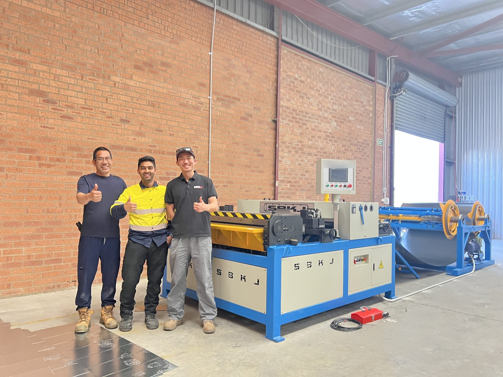
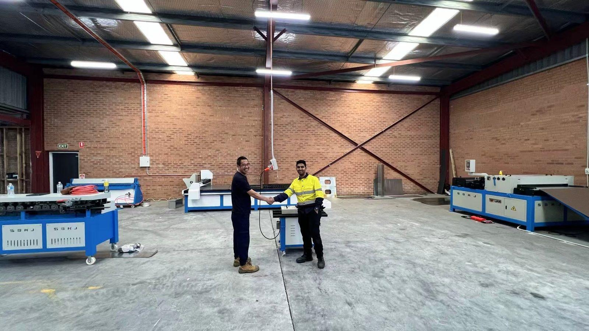
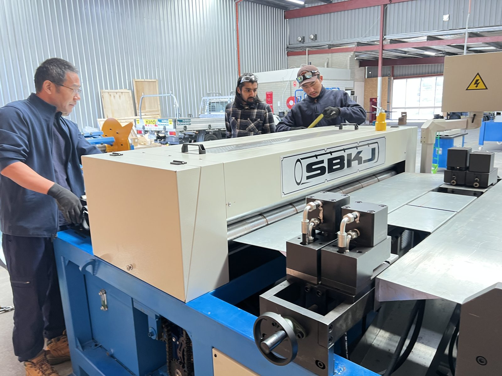
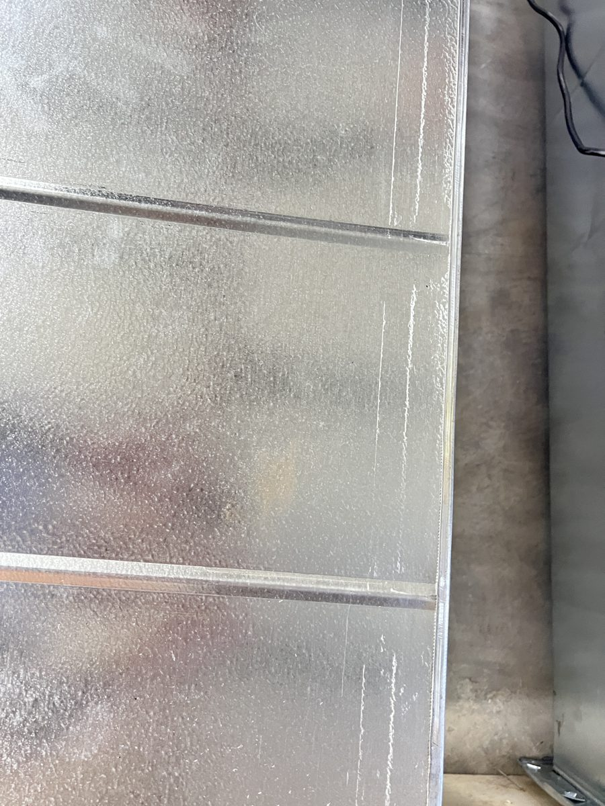

Case study · Australia · Installed September 2026
Airtemp Canberra builds its own duct shop: 8 Taokron machines, installed and running
In September 2026 Airtemp Canberra, an air-conditioning company in the ACT, commissioned a complete rectangular duct shop in its Fyshwick warehouse. At the centre is a Taokron SBAL-III auto duct line, backed by a plasma cutter, a TDF flange former and five machines for folding, seaming, corners and rolling. The line made its first duct during commissioning week.

At a glance
| Customer | Airtemp Canberra Pty Ltd |
|---|---|
| Site | Fyshwick, Canberra, ACT |
| Installed | September 2026 |
| Scope | 8 machines: a complete rectangular duct shop, plus round-duct seaming and rolling |
| Main machine | Auto Duct Line SBAL-III, 1550 mm working width |
| Our part | Machines, shipping to Sydney, delivery to Canberra, on-site installation, commissioning and operator training |
What went into the shop
Airtemp did not buy one machine. They bought a shop: everything needed to go from a coil of galvanised steel to finished, flanged rectangular duct, plus the tools for fittings and round work.
| Machine | What it does in the shop |
|---|---|
| Auto Duct Line SBAL-III (1550 mm) with coil rack | The main machine. Takes galvanised coil and turns it into cut, notched duct blanks ready for forming. |
| Plasma Cutter SBPC1550×4000 | Cuts fittings, transitions and one-off shapes from flat sheet. |
| Transverse Duct Flange Forming Machine SBTDF-12 | Rolls the TDF flange onto duct panel edges so sections bolt together. |
| Lockformer (SBLC series) | Forms the Pittsburgh lock seam that joins rectangular duct panels. |
| Pneumatic Folding Machine SBWS-1.2×2000P | Air-powered folding up to 2000 mm, for panels and fittings. |
| Pneumatic Corner Mounting Machine SBCC | Fits the corner pieces into TDF flanged duct. |
| Seam Closing Machine F1275-PRO | Portable seam closer for round duct. |
| Roll Bending Machine SBW11G-1.2×1530 | Rolls sheet into round and curved parts. |
The install
Our engineer worked on site alongside Airtemp's team. Main power went into the line's control cabinet, the decoiler motor and its sensor were wired in, and the plasma power source was connected and tested. Then each machine was run with Airtemp's own operators until they were making parts themselves.
It went in fast because Airtemp had done their side properly. The floor was clear, the power supply was ready and the crew was there when the machines arrived. That preparation matters more to a smooth install than anything on the spec sheet. If you are planning a shop, our installation and commissioning guide lists what to have ready.



Why contractors bring duct in house
An air-conditioning contractor that buys its duct from an outside fabricator waits in that fabricator's queue on every job. Making duct in house puts the lead time, the quality checks and the last-minute site changes back under the contractor's own control. Canberra has only a handful of duct shops, so for a contractor there, owning the capacity is a real advantage.
Thank you
Thank you to Khagen and Suresh at Airtemp for trusting us with their new shop, and to the Airtemp crew for the work they put in during commissioning week.
Related
- Auto Duct Line SBAL-III: the main machine in this shop
- How to choose an auto duct production line
- Duct machine installation and commissioning guide
- Kavanagh Industries, Sydney: an SBTF-1602 spiral tubeformer, commissioned October 2026
- Taokron in Australia
Setting up a duct shop in Australia? Tell us the duct you make, your floor space and your power supply, and we will send back a machine list and a quotation within 12 hours.
Request a quote